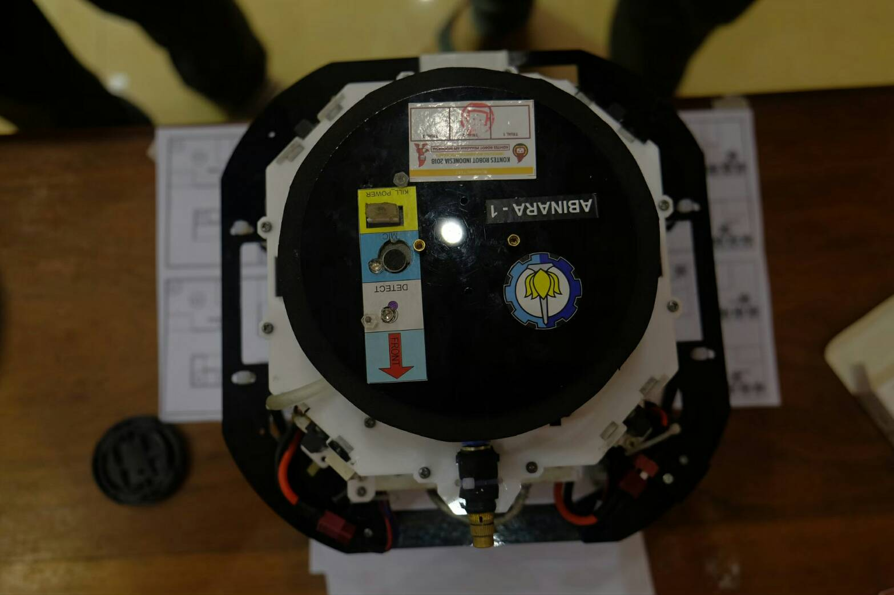
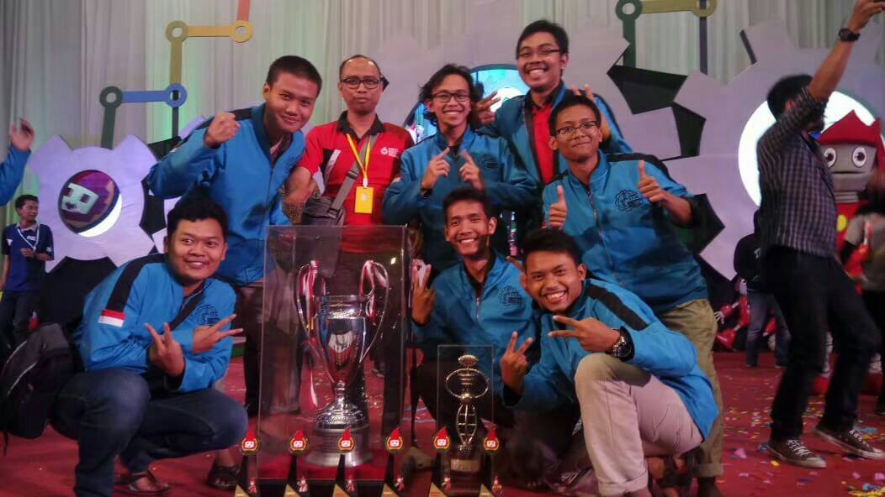
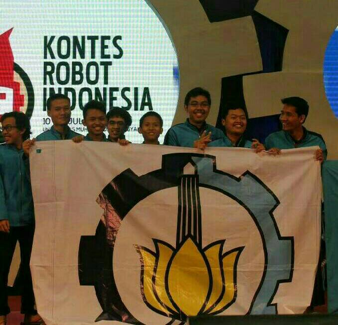

Quadruped Robot
Quadruped robot is project of Abinara-1 ITS robotics team. This robot is a basic representation of the spider movements. Named also a Quadruped robot since it has four legs and make its movements using these legs, the movement of each leg is related to the other legs in order to identify the robot body postion and also to control the robot body balance.
We use the robot to compete in Indonesia Robotics Contest or Kontes Robot Indonesia especially in Fire Fighting Home Robot Contest division. Kontes Robot Indonesia is held by Ministry of Research and Technology of the Republic of Indonesia. This contest consists of several categories or divisions.
In this project, I was a programmer that created a program for the robot such that it could complete challenges as fast and as accurately as possible. To accomplish those challenges, we need to develop many things in the robot's aspect, including developing an object detection system so the robot could detect wall and obstacles in the field, developing a walking control system so the robot could walk smoothly without stuck, etc, and developing software or applications that support robot's performance.